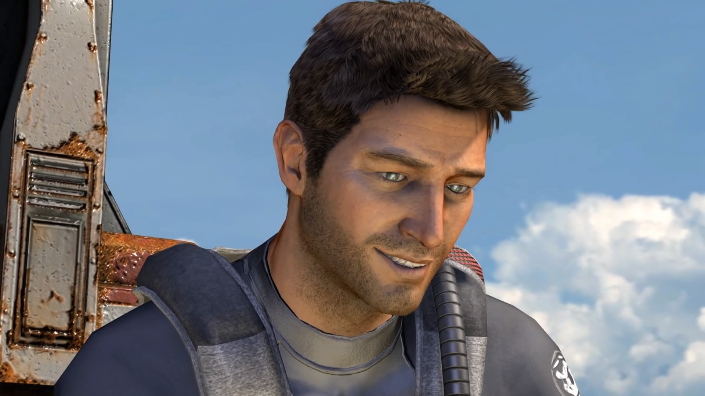
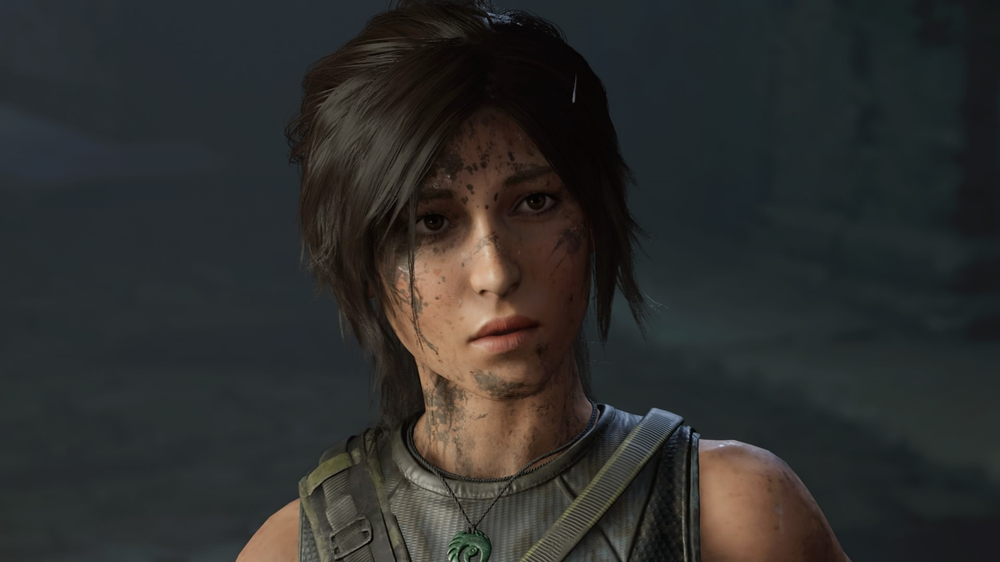
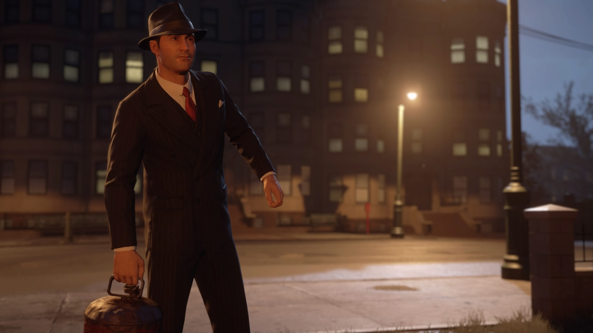
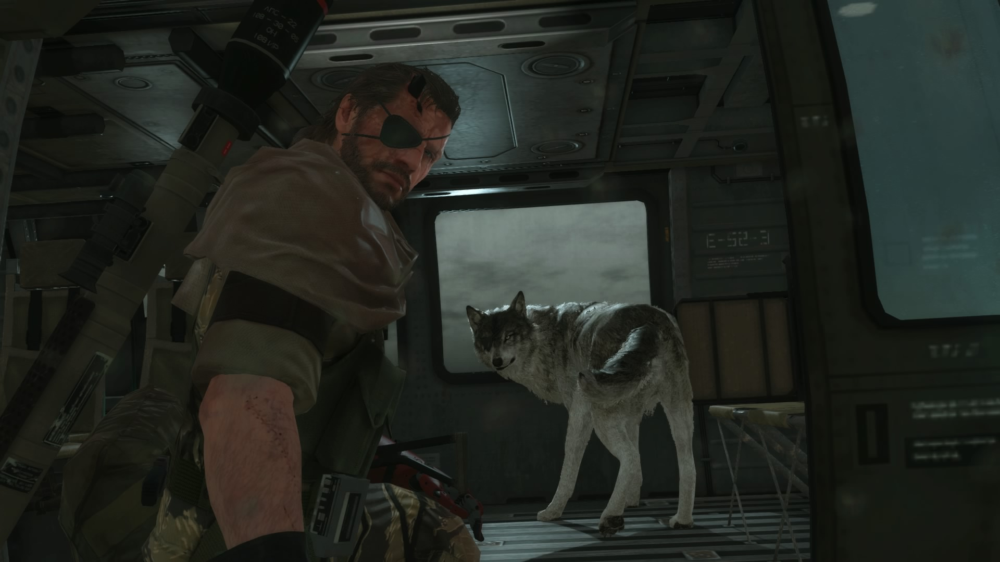
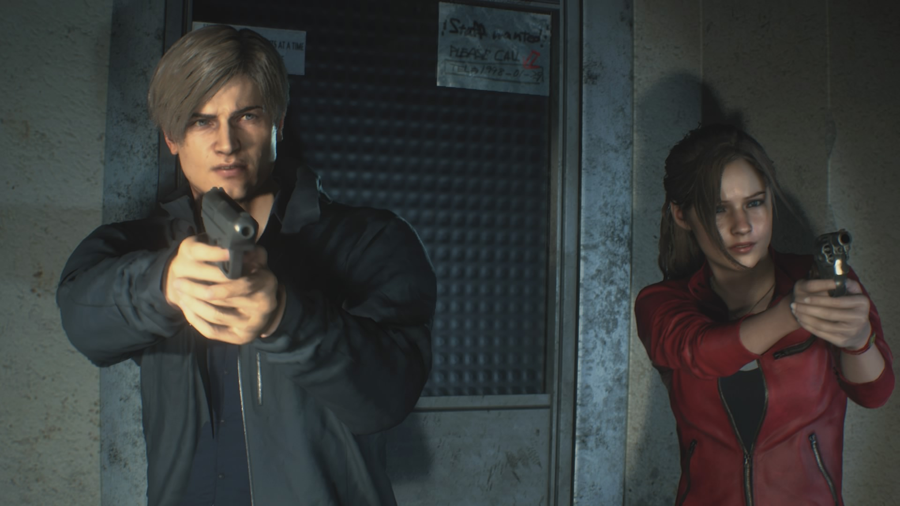

TOP 5 - Hrdinové herního světa
Nathan Drake

Kdo by neznal herní sérii Uncharted a jejího hlavního hrdinu, charismatického lovce pokladů Nathana Drakea. S tímto neohroženým dobrodruhem inspirovaným Indianou Jonesem jsme zažívali jedno velké dobrodružství za druhým. Každý si hned vybaví jeho typickou polokošili světlé barvy a řetízek prstenu na krku, který získal jako malý. Hrdinů jako je Nathan je v herním světe velice málo. Může za to především malý zástup her v dané tematice, tím mám na mysli lovení pokladů. Pokaždé když jsem s touto postavou procházel hru, tak jsem měl pocit, jako bych byl přímo uvnitř děje. Být neohroženým dobrodruhem, pátrat po ztraceném pokladu, zbavovat se svých nepřátel a navštěvovat neznámá či zapomenutá místa.
Přesně toto dobrodružství jsme prožili spolu s Nathanem ve hře uncharted. Je to člověk, který uměl nejen rozdávat rány a dobře střílet z jakékoliv palné zbraně, ale taky to byl někdo, kdo dokázal okouzlit krásnou Elenu. Charismatický, silný, odvážný, skutečný herní Indiana Jones. Když se nad tím vlastně nad vším společně zamyslíme, tak si vemte, že Nathan je vlastně zloděj. Nebo ne vlastně, ono to tak je. Je to vykradač hrobů, který likvidoval své nepřátele po desítkách a přesto všechno se stal jednou z nejpopulárnějších postav herního průmyslu vůbec.
Nathan se s námi rozloučil v posledním čtvrtém díle série Uncharted a musím říci, že to bylo příjemné rozloučení. Teď už tento lovec pokladů v důchodů užívá zaslouženého odpočinku. Je jisté především to, že tuto postavu bude velmi těžké překonat.
‚‚Nathan Drake nás provázel na svých dobrodružných výpravách ve čtyřech dílech a dalších už se bohužel asi nedočkáme.‚‚
Lara Croft

Pokud jsme jako prvního hrdinu zmínili neohrženého lovce pokladů Nathana Drakea, tak nesmíme zapomenout na jeho konkurenci v podání nádherné Lary Croft. Celá herní série Tomb Raider zažila poměrně úspěšný restart a z mladičké Lary Croft se stala skutečná hrdinka mezi lovcemi pokladů.
Tato krásná mladá archeoložka, se které se postupem času stala neohrožená dobrodružka nás poctila svým novým charakterem ve třech remakových dílech. Lara mě zaujala již v prvním díle, kde její loď s posádkou ztroskotala a ocitla se na ostrově Yamatai. Tenkrát tato mladá dívka, která působila velmi křehce, se ukázala jako statečná hrdinka, která se dokáže dostat i z těch nejsložitějších situací. Je krásná, umí se bít, má přesnou mušku a je snad vybavená všemi outdoorovými schopnostmi, které člověk získává snad celý život. Strašně se mi líbilo její nasazení ve hře, zejména ve druhém dílu Rise Of The Tomb Raider, kde musela použít veškeré svě schopnosti k přežití na Sibiři.
Dnes toho má za sebou tato kráska opravdu hodně. Průzkum tajných a ztracených míst ve světě, desítky pobitých nepřátel a neustálý boj s organizací
Trinity. Lara je ale člověk, který se nikdy nezvdává a díky ní jsem zažil další skvělé herní dobrodružství v podobě vykradače hrobů.
‚‚Restart série Tomb Raider se povedl a Lara Croft má v herním světe znovu své právoplatné místo.‚‚
Tommy Angelo

Mafia. Jedno slovo a každému se hned vybaví ta nejlepší česká hra vůbec. Už ani nevím kolik je to let, kdy jsem dohrál původní díl mafie, takže když pak vyšel po letech remake, musel jsem ho hned koupit a začal můj průzkum města Lost Heaven s Tommym Angelem.
Právě Tommy Angelo je někdo, kdo hře Mafia dodal jisté kouzlo. Kdo by se nechtěl alespoň jednou v životě vžít do taliána a pracovat pro mocenskou organizaci. Mít respekt, moc, prachy a do toho občas vyřídit nějaké konkurenty. Jenomže Tommy Angelo nebyl pouze zabijácký gangster. Ve hře jasně ukázal, že dokáže být i dobrým člověkem. Vlastně to, co vše dělal, byla jen práce, která ho živila. Díky němu jsme se vrátili zpět v čase do doby, která nebyla lehká vůbec pro nikoho. Obyčejný taxikář, který se stal jedním z hlavních postav rodiny Salieri.
Jeho postava se povedla jak v původním díle, tak i v remaku. Jeho charisma zůstalo zachováno a jeho proslov na konci hry nosíme někteří z nás v hlavě dodnes.
‚‚Ten kdo chce od života příliš mnoho, může nakonec ztratit úplně všechno. A ten chce příliš málo, nemusí dostat vůbec nic.‚‚
Big Boss

Big Boss a Solid Snake. Dva hlavní hrdinové špionážní stealth akce Metal Gear Solid. Vybral jsem právě Big Bosse, jelikož to byl ten, který zakončoval celou sérii. V pátém díle byl vůbec poprvé zcela otevřený svět a možností jak zvládat mise bylo opravdu mnoho.
Big Bosse vidím jako tvrdého, nemilosrdného vojáka. Je to skutečně ten, koho potřebujete na likvidaci teroristů a dalších nepřátel. Někdo, kdo je schopen za úspěch své mise položit i samotný život. Díky Big Bossovi člověk pozná, co je to odvaha, protože nepřátel, s kterými se musel tenhle zabiják vypořádat bylo mnoho a to nezmiňuji boj se složitými bossy. Big Boss se stal legendou herního světa a mrzí mě to, jak to s ním celé dopadlo. Na druhou stranu je to někdo, kdo si zaslouží důchod a odpočinek.
‚‚Big Boss nebo Solid Snake? Dodnes si spousta hráčů tyto dva hrdiny plete. Nicméně ten kdo se s námi rozloučil jak se sluší a patří byl právě zmíněný Big Boss.‚‚
Leon S. Kennedy

A přesouváme se do světa zombies a nekonečné herní série Resident Evil. Všechny díly RE nebyly dobré, to si můžeme říci na rovinu. Co ale bylo excelentní, tak je postava hlavního a nejznámějšího hrdiny světa RE a to je Leon S. Kennedy. Kdysi nováček u policie, který přijel do města Raccoon City, kde ho čekalo jedno nemilé překvapení. Město bylo mrtvé a jeho čekal boj o přežití. Jako nováček měl tak před sebou skutečně záživný první pracovní den a to dostat ze z Raccoon City, dříve než bude pozdě.
Jeho postava byla natolik oblíbená, že proniknul i do filmových adaptací. Teď mám na mysli ty animované nikoli ty filmové. Animáky musím říct, že mě docela bavily a Leon až na pár drobností je senzační. Není tak svělý jako ve hře, ale to není asi zase tolik překvapující názor. Strašně se mi líbí vývoj jeho postavy. Jako nováček u policie se dostal až k práci pro vládu a spolu s Claire Redfieldovou vytrvává v boji proti bioterorismu.
Asi se shodneme, že pokud tento hrdina přežil město plné zombies, tak už asi přežije všechno. Leon S. Kennedy tu s námi bude ještě hodně dlouho a moc se těším až ho znovu uvidíme dalším plnohodnotném dílu Resident Evil.
‚‚Leon S. Kennedy a Resident Evil jsou dvě věci, které zkrátka patří k sobě. Je smutné jakým směrem se nakonec celá herní série vydala.‚‚